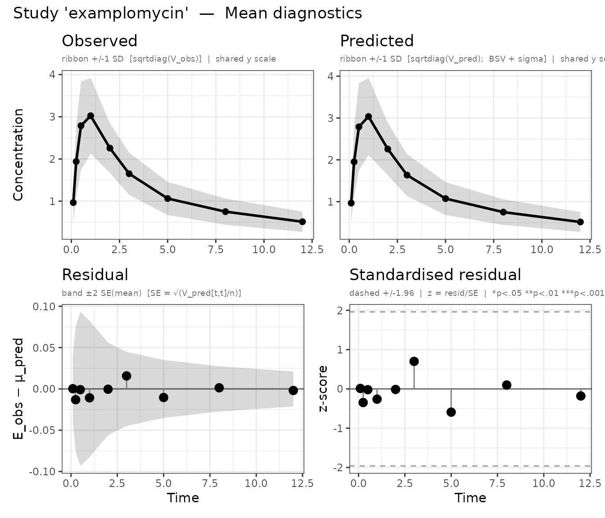
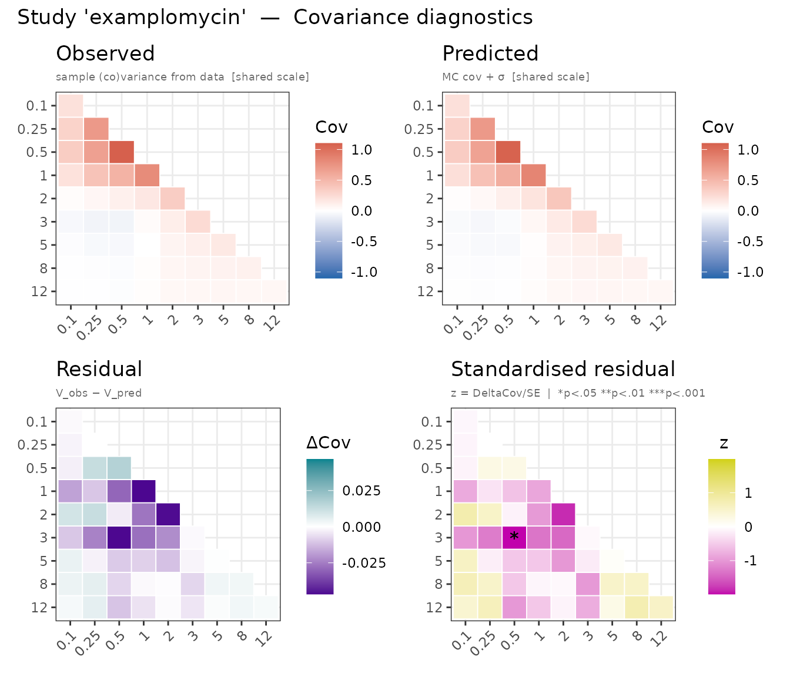
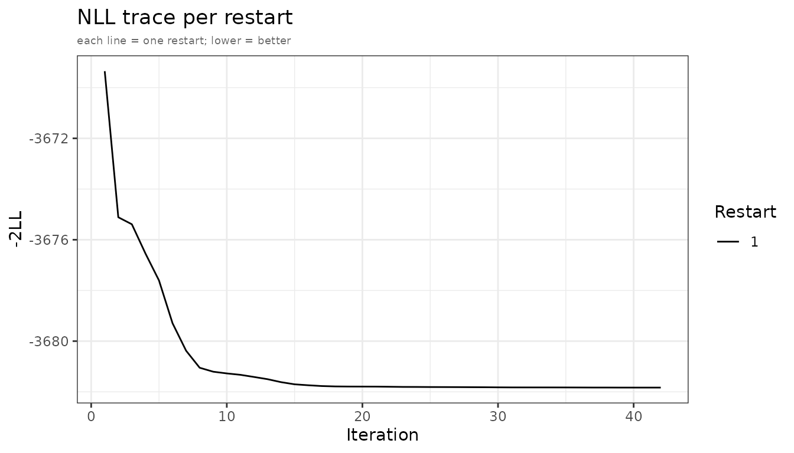
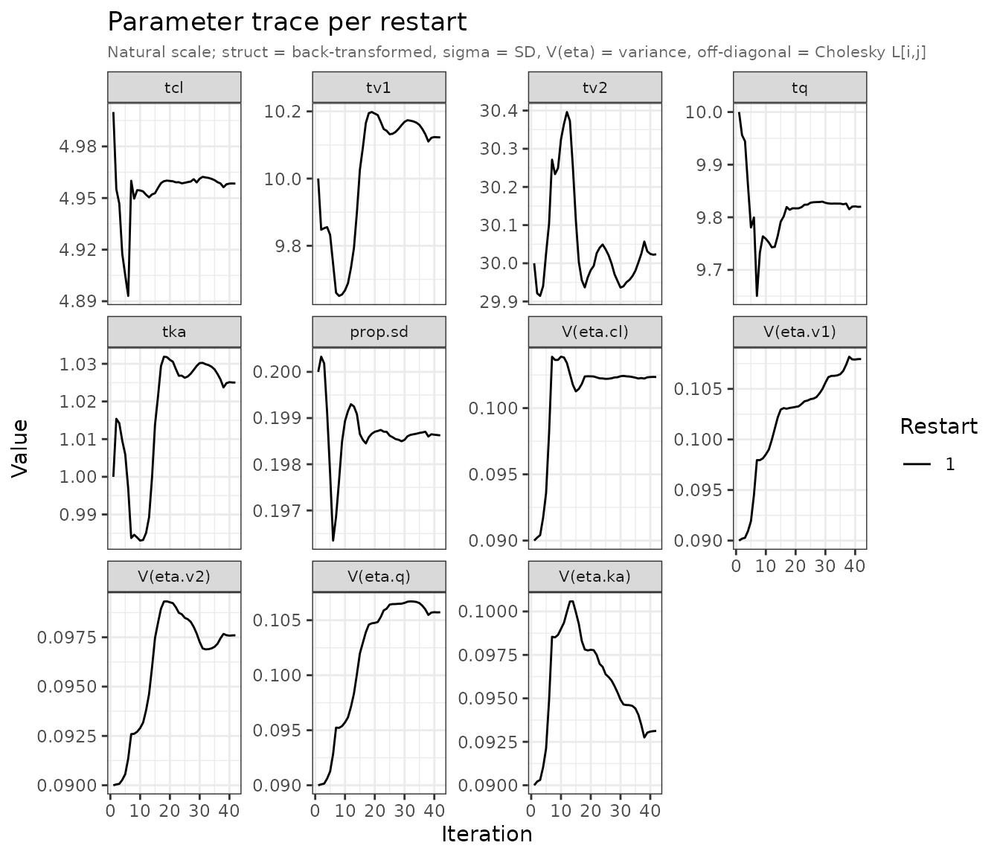
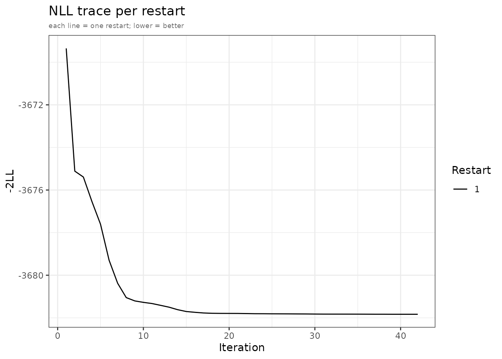
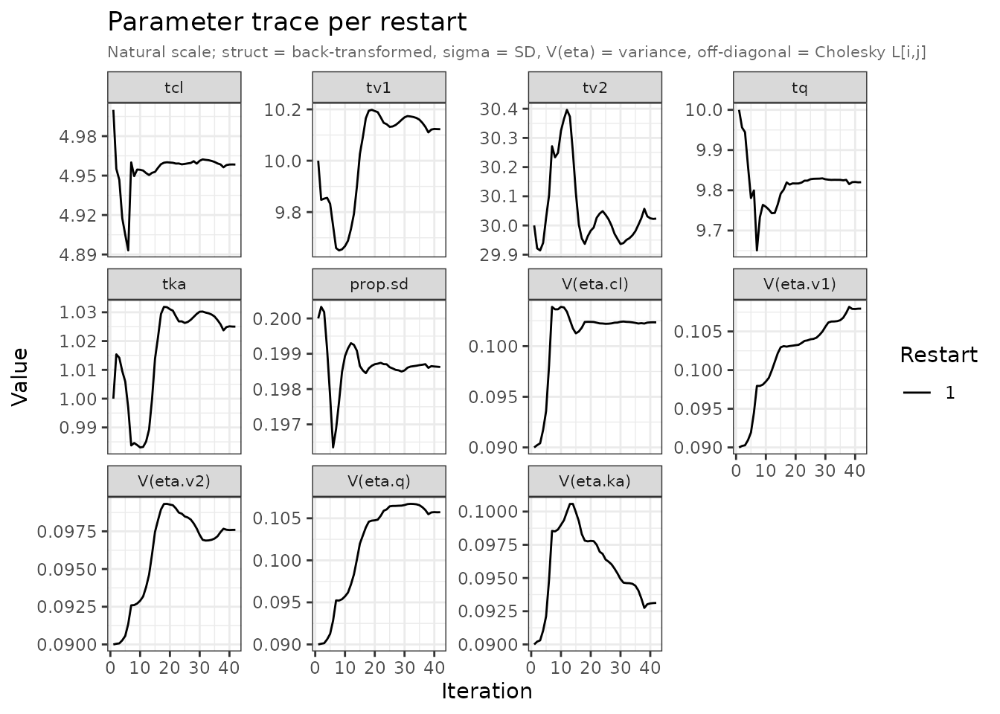
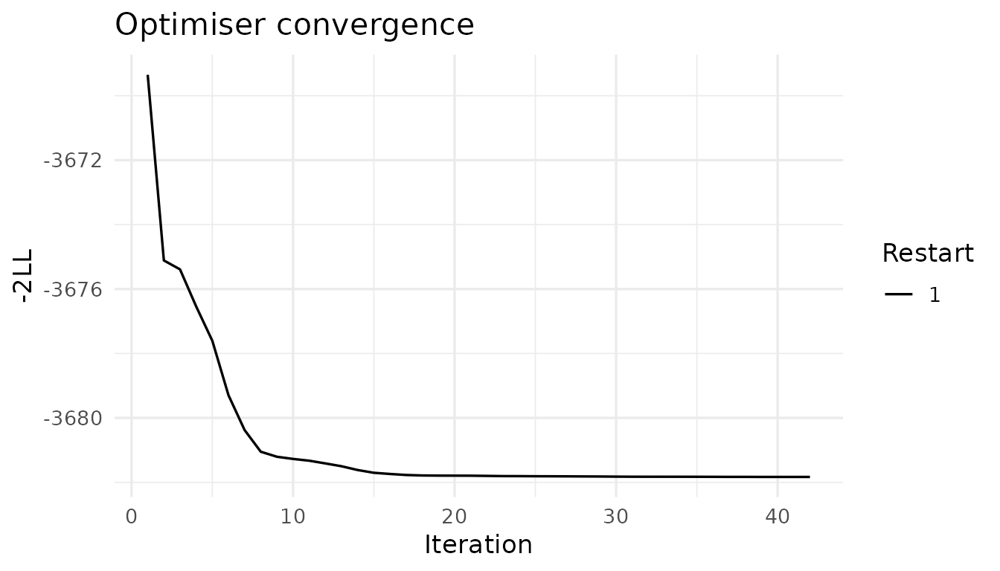
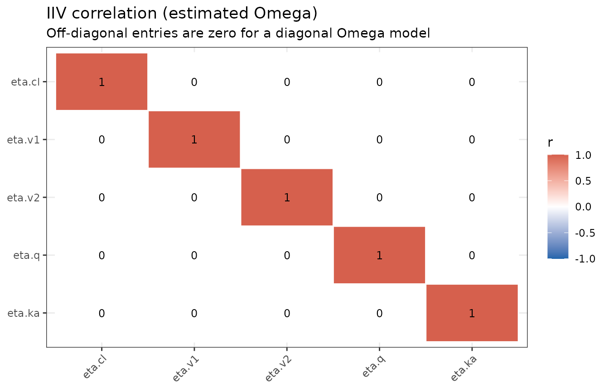

plot.admFit() produces up to four diagnostic panel
types. Call with which to select a subset; the default is
all four. Each panel is returned as a named ggplot2 object in a
list.
Mean diagnostics
The "mean" panel is a 2×2 grid per study. Requires
patchwork for the composite layout; without it, four
separate plots are returned.
plots <- plot(fit, which = "mean")
Mean diagnostics for the examplomycin study.
Top-left — Observed: sample mean with ±1 SD ribbon, where SD = √diag(V_obs).
Top-right — Predicted: predicted mean with ±1 SD ribbon, where SD = √diag(V_pred). V_pred combines between-subject variability (Omega) and residual error (sigma). Both top panels share the same y-axis scale so differences in magnitude are immediately visible.
Bottom-left — Raw residual:
E_obs[t] − μ_pred[t] as a lollipop. The grey band is ±2
SE(mean), where SE = √(V_pred[t,t] / n). Points outside
the band indicate systematic bias at that time point.
Bottom-right — Standardised residual:
z[t] = residual[t] / SE[t]. Under a well-specified model, z
should be approximately N(0, 1). Stars flag |z| > 1.96 (∗), 2.58
(∗∗), 3.29 (∗∗∗). With 9 time points and no multiplicity correction, one
flagged time point is expected by chance alone.
Covariance diagnostics
The "cov" panel compares observed and predicted
(co)variance as heatmaps. Requires patchwork for the
composite layout.
plots <- plot(fit, which = "cov")
Covariance diagnostics: observed and predicted covariance matrices with residuals.
Top row — Observed | Predicted: both matrices plotted on a shared blue-white-red scale. A good fit shows matching patterns of magnitude and sign — including the off-diagonal temporal correlation structure.
Bottom-left — Residual (V_obs − V_pred): diverging scale (purple-white-teal). Persistent positive residuals on the diagonal mean the model under-predicts variance; negative residuals indicate over-prediction.
Bottom-right — Standardised residual: each entry divided by its asymptotic SE. Diagonal SE = √(2 V[i,i]² / (n−1)); off-diagonal SE = √((V[i,i]·V[j,j] + V[i,j]²) / (n−1)). Stars use the same thresholds as the mean panel.
NLL trace
The "nll" panel shows how the objective function evolved
across optimizer iterations, coloured by restart:
plots <- plot(fit, which = "nll")
NLL convergence trace. Each line is one optimizer restart.
Restarts that converge to the same final value support a unimodal
landscape. A spread of final NLL values suggests local optima — increase
n_restarts and restart_sd in
admControl().
Parameter trace
The "par" panel facets each parameter’s trajectory over
optimizer iterations:
plots <- plot(fit, which = "par")
Parameter trace on the natural scale. Struct thetas back-transformed; sigma shown as SD; V(eta) = variance.
Parameters are displayed on the natural scale:
- Structural thetas: back-transformed (e.g.
exp()for log-scale params) - Sigma: displayed as SD
- Omega diagonal: displayed as variance, labelled
V(eta.x) - Omega off-diagonal: raw Cholesky L[i,j]
Smoothly converging traces that stabilise well before
maxeval indicate the optimizer is not being artificially
cut off. If traces still drift at the end, increase
maxeval.
Accessing individual panels
plot() returns its list invisibly. Assign it to retrieve
or modify panels:


names(plots)
#> [1] "nll_trace" "par_trace"Panel names follow the pattern
<type>_<study> for per-study panels, or
nll_trace / par_trace for the trace
panels:
plots$nll_trace
plots$par_trace
plots$mean_examplomycin
plots$cov_examplomycinCustomising with ggplot2
All returned objects are standard ggplot2 plots:
plots$nll_trace +
ggplot2::theme_minimal(base_size = 13) +
ggplot2::labs(title = "Optimiser convergence", subtitle = NULL)
NLL trace with a custom theme.
IIV correlation heatmap
The estimated Omega matrix can be visualised as a correlation heatmap to inspect the inter-individual variability structure. This is especially informative for models with off-diagonal omega entries.
omega <- fit$env$admExtra$omega
eta_nms <- fit$env$admExtra$eta_col_names
if (is.null(eta_nms)) eta_nms <- paste0("eta.", seq_len(nrow(omega)))
corr_mat <- cov2cor(omega)
rownames(corr_mat) <- colnames(corr_mat) <- eta_nms
df_corr <- expand.grid(
eta_i = factor(eta_nms, levels = rev(eta_nms)),
eta_j = factor(eta_nms, levels = eta_nms),
stringsAsFactors = FALSE
)
df_corr$r <- as.vector(t(corr_mat))
ggplot2::ggplot(df_corr, ggplot2::aes(x = eta_j, y = eta_i, fill = r)) +
ggplot2::geom_tile(colour = "white", linewidth = 0.5) +
ggplot2::geom_text(ggplot2::aes(label = round(r, 2)), size = 3.2) +
ggplot2::scale_fill_gradient2(
low = "#2166AC", mid = "white", high = "#D6604D",
midpoint = 0, limits = c(-1, 1), name = "r"
) +
ggplot2::labs(
title = "IIV correlation (estimated Omega)",
subtitle = "Off-diagonal entries are zero for a diagonal Omega model",
x = NULL, y = NULL
) +
ggplot2::theme_bw() +
ggplot2::theme(axis.text.x = ggplot2::element_text(angle = 45, hjust = 1))
IIV correlation matrix derived from the estimated Omega.